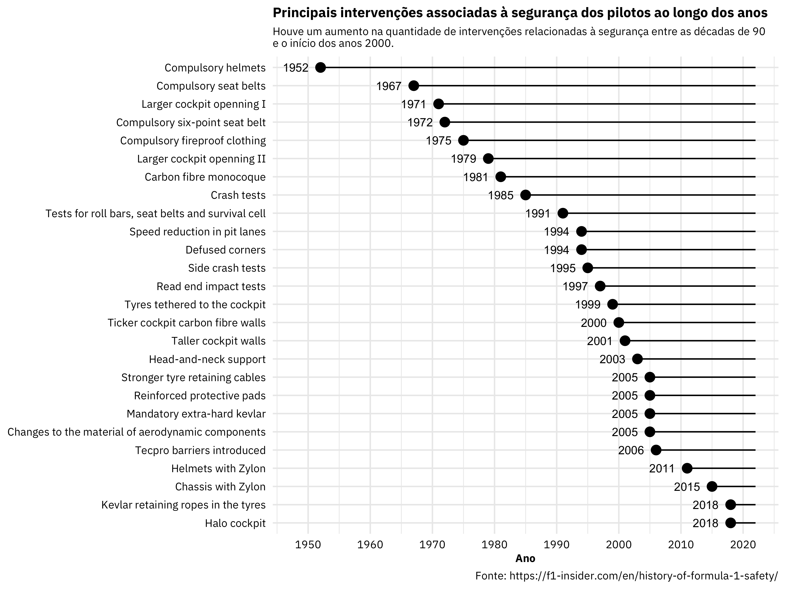
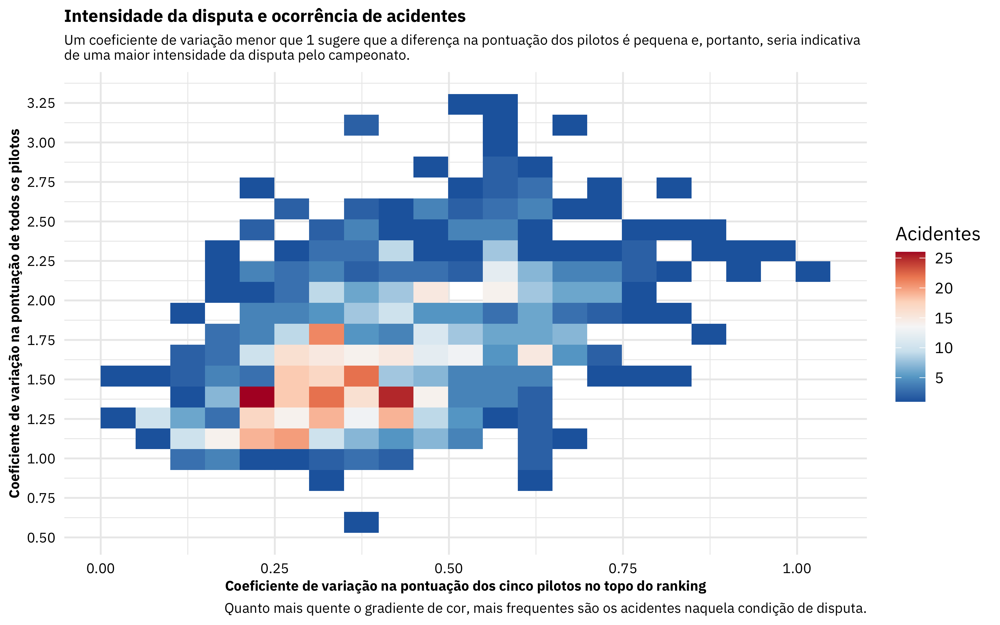

Motivação
Uma parte chata de um esporte competitivo e de velocidade como a Fórmula 1 é o risco de ocorrência de um acidente. A história da Fórmula 1 está marcada por estes eventos, e não é preciso ir muito longe para lembrar de casos que marcaram gerações. Em resposta a esse risco, diversas intervenções têm sido implementadas no intuito de reduzir e/ou mitigar a ocorrência de acidentes e suas consequências para os pilotos - conforme informações retiradas do site F1 Insider e resumidas na figura abaixo.
Show code
# carregando os pacotes necessários
library(tidyverse) # core
# library(tidytuesdayR) # ler os arquivos do tidytuesday
library(fs) # manipular paths
library(lubridate) # trablhar com datas
library(readxl) # carregar dados de excel
library(skimr) # descricao do dataframe
library(ggupset) # para criar um upset plot
library(patchwork) # para compor figuras
# carregando os dados de dispositivos de segurança na F1
safety <- read_excel(path = 'data/f1_safety.xlsx', skip = 1)
# criando a figura principal
safety %>%
# prepaarando os dados para criar a figura
mutate(
# imputando o ano atual
Now = year(today()),
# ordenando as intervencoes po rano
Intervention = fct_reorder(.f = Intervention, .x = Year, .fun = min, .desc = TRUE)
) %>%
# criando a figura do ano a partir do qual as intervenções foram implementadas
ggplot(mapping = aes(x = Year, xend = Now, y = Intervention, yend = Intervention)) +
geom_segment() +
geom_point(mapping = aes(x = Year), size = 3) +
geom_text(mapping = aes(x = Year, label = Year), nudge_x = -4, size = 3) +
scale_x_continuous(breaks = seq(from = 1950, to = 2020, by = 10)) +
labs(
title = 'Principais intervenções associadas à segurança dos pilotos ao longo dos anos',
subtitle = 'Houve um aumento na quantidade de intervenções relacionadas à segurança entre as décadas de 90
e o início dos anos 2000.',
caption = 'Fonte: https://f1-insider.com/en/history-of-formula-1-safety/',
x = 'Ano'
) +
theme(
axis.title.y = element_blank()
)

Dado o investimento crescente na segurança dos pilotos, uma pergunta que me veio à mente é o quanto isto está relacionado à variação na ocorrência de acidentes entre provas e temporadas. Ao que àquela figura sugere, eu esperaria que a frequência de ocorrência destes eventos estaria em uma decrescente ao longo dos anos, talvez não chegando à zero, mas tornando-os cada vez mais raros. Por sorte, podemos tentar explorar esta ideia utilizando uma base de dados disponível através de um #TidyTuesday que ocorreu há alguns meses atrás. Você pode acessar essa base de dados usando as funções do pacote tidytuesdayR ou apontando diretamente para o arquivo no GitHub; eu optei por baixar uma imagem desses dados e deixá-los disponíveis localmente1.
# carregando todos os dados a partir do github do tidytuesday
# se você quiser baixar os dados direto da fonte
# tt_dataset <- tt_load(x = 2021, week = 37)
# carregando a copia local dos dados
## extraindo os paths das copias locais
paths_copias_locais <- dir_ls(path = 'data/', regexp = '.rds')
## criando vetor de nomes dos arquivos
nomes_arquivos <- paths_copias_locais %>%
path_file() %>%
path_ext_remove()
## carregando os arquivos em uma lista
tt_dataset <- map(.x = paths_copias_locais, .f = read_rds)
## renomeando os elementos da lista
names(tt_dataset) <- nomes_arquivos
As informações que precisamos para analisar a ocorrência dos acidentes nas provas da Fórmula 1 estão separadas em duas tabelas. A primeira delas, results, contém os resultados e outras informações sobre cada piloto em cada prova. A segunda tabela, status, é uma base de-para que nos ajuda a converter a coluna numérica statusId, comum às duas bases, em um string associado ao que ocorreu com aquele piloto naquela prova. É nesta coluna que está a informação se cada piloto esteve envolvido ou não em um acidente em uma dada prova. Assim, agrupando as observações pelo código identificador da prova, podemos determinar se existe pelo menos um piloto que esteve envolvido em um acidente ou não em cada prova.
Um ponto importante é que vou considerar apenas os status de Accident e Fatal accident para determinar se um piloto esteve envolvido em um acidente ou não. Até existem outras categorias de status que poderiam caracterizar estes mesmos eventos, tais como, Collision, Injury, Eye injury. No entanto, vou ficar no lado mais seguro, e assumir que apenas àquelas duas primeiras categorias de status é que caracterizam a ocorrência de um acidente. O código abaixo dá conta de juntar as duas tabelas e de definir se houve pelo menos um acidente associado à cada uma das provas.
## adicionando o dicionario de resultados
resultados <- left_join(x = tt_dataset$results,
y = tt_dataset$status,
by = 'statusId')
## vetor com as categorias que vou usar como acidente
categorias_acidente <- c('Accident', 'Fatal accident')
## juntando padrao de regex para os acidentes
regex_acidentes <- paste0(categorias_acidente, collapse = '|')
## mapeando os acidentes por prova
acidentes_por_prova <- resultados %>%
# testando se aquele padrão de regex ocorre em cada linha
mutate(tem_acidente = str_detect(string = status, pattern = regex_acidentes)) %>%
# agrupando as observações pelo identificador da prova
group_by(raceId) %>%
# testando se existe qualquer linha onde existe algum TRUE
summarise(tem_acidente = any(tem_acidente))
count(acidentes_por_prova, tem_acidente, name = 'ocorrencias')
# A tibble: 2 × 2
tem_acidente ocorrencias
<lgl> <int>
1 FALSE 607
2 TRUE 441A base de dados sobre a ocorrência de acidentes ao nível das provas é levemente desbalanceada, uma vez que existem 607 provas sem a ocorrência de um acidente contra 441 onde eles ocorreram. Mas com que frequência estes acidentes foram registrados ao longo das temporadas da Fórmula 1 comparado ao aumento nas medidas de segurança para preveni-los?
Show code
# calculando o volume acumulado de medidas de seguranca
acumulado_medidas <- tibble(
# criando uma sequência completa de anos
year = seq(from = 1950, to = 2020, by = 1)
) %>%
# juntando com as informacoes das medidas de seguraca por ano
left_join(y = safety %>%
distinct(Year) %>%
mutate(medida = 1),
by = c('year' = 'Year')) %>%
# adicionando um contador zero para ajudar a fazer a soma acumulada
replace_na(replace = list(medida = 0)) %>%
# calculando o volume acumulado de medidas de seguranca existentes por temporada
mutate(n_medidas = cumsum(medida))
# criando a figura
## juntando as informacoes da ocorrencia de acidentes por prova com o ano em que a prova ocorreu
left_join(x = acidentes_por_prova,
y = select(tt_dataset$races, raceId, year),
by = 'raceId') %>%
# agrupando pela temporada
group_by(year) %>%
# calculando a proporcao de provas com acidentes por temporada
summarise(proporcao = mean(tem_acidente)) %>%
# juntando informacoes da quantidade acumulada de medidas de seguranca existentes por temporada
left_join(y = acumulado_medidas, by = 'year') %>%
# criando a figura
ggplot() +
geom_line(mapping = aes(x = year, y = n_medidas / 20), color = '#3399E6', size = 1) +
geom_line(mapping = aes(x = year, y = proporcao), color = 'tomato1', size = 1) +
scale_x_continuous(breaks = seq(from = 1950, to = 2020, by = 5)) +
scale_y_continuous(sec.axis = sec_axis(trans = ~ . * 20,
name = 'Quantidade de medidas de segurança existentes')) +
labs(
title = 'Histórico da proporção de provas com acidente e medidas de segurança existentes por temporada',
subtitle = 'A frequência de ocorrência de acidentes caiu no final da década de 80 e se manteve assim até o início dos anos 2000, quando ela novamente voltou a aumentar um pouco.\nNo mesmo período, uma número cada vez mais de medidas de segurança têm sido implementado.',
x = 'Ano/Temporada',
y = 'Proporção de provas com acidente na temporada'
) +
theme(
axis.title.y.left = element_text(colour = 'tomato1'),
axis.text.y.left = element_text(colour = 'tomato1', face = 'bold'),
axis.title.y.right = element_text(colour = '#3399E6'),
axis.text.y.right = element_text(colour = '#3399E6', face = 'bold')
)
Através da figura acima podemos observar que acidentes eram muito comuns na Fórmula 1 até o final da década de 80, quando eles despencaram2. A partir daí, eles se mantiveram em baixa até meados dos anos 2000, quando eles voltaram a subir, se mantendo em um patamar entre 2003 à 2012 e outro até hoje. Por outro lado, o número de medidas de segurança só têm aumentado, principalmente durante o período entre 1990 e 2005, quando elas praticamente dobraram. Ainda assim, a frequência de ocorrência de acidentes não zerou e, tampouco, continuou apresentando uma tendência de queda com o aumento no número de medidas de segurança nos últimos anos.
Dado os padrões observados, a ocorrência de acidentes parece não estar associada simplesmente à quantidade ou natureza das medidas de segurança implementadas. Isto abre a possibilidade para que outros fatores associados às provas e/ou às temporadas também estejam contribuindo para a variação na frequência destes eventos. Neste contexto, que outros fatores poderiam ser estes? Se nós os conhecermos, seria possível determinar a probabilidade e/ou o potencial de que estes eventos ocorram? São essas as perguntas que eu buscarei abordar aqui[Só para frisar: não é minha intenção prever acidentes! Meu intuito principal aqui será olhar para o histórico dos eventos e tentar entender o conjunto de fatores que parece estar mais frequentemente associado à sua ocorrência. Gerar predições que impeçam estes eventos de ocorrerem está fora do escopo deste post.].[Disclaimer: eu já fui muito fã de Fórmula 1, mas deixei de acompanhar há muito tempo atrás. Neste contexto, é muito provável que eu deixe de fora das minhas análises algumas informações muito valiosas ou de conhecimento geral para os fãs mais assíduos. Assim, peço desculpa de antemão caso isso ocorra e, reforço, que as análises aqui apresentadas estão mais orientadas ao exercício do que algo que seja para valer.]
Preparação dos Dados
Considerações gerais
Definir precisamente a pergunta que queremos responder e/ou o objetivo que queremos alcançar é o passo principal para a criação da base analítica correta: é isto que define qual será a variável resposta bem como a sua granularidade. No caso apresentado aqui, buscarei definir a probabilidade de ocorrência de um acidente em cada uma das provas da Fórmula 1 no registro histórico. Como consequência, precisarei montar uma base analítica na qual tenhamos uma observação por prova (i.e., a granularidade) e, associado à elas, um indicador se houve ou não um acidente (i.e., a variável resposta).
O segundo passo importante é definir quais variáveis utilizar para auxiliar na tarefa de previsão. Meu ponto com isto não está na seleção de variáveis per se, mas sim na criação de variáveis para ajudar a endereçar a pergunta e/ou objetivo proposta. É bem relevante traçar essa diferença, pois é bastante comum encontrar bases de dados prontas para ajustar os algoritmos mas, na vida real, é muito raro encontrar essas coisas já desenhadas para nós. Além disso, eu tenho a impressão de que raramente refletimos sobre o processo de ideação que levou àquelas variáveis à estarem naquela tabela. Isso daria uma discussão longa por si só, mas gostaria de aproveitar a oportunidade para comentar sobre três coisas relevantes nesta tarefa. Todas elas parecerão óbvias mas, novamente, acho que de tempos em tempos é relevante relembrarmos destas coisas.
- As variáveis criadas precisam estar na mesma granularidade da variável resposta. Isto significa que as variáveis que vou utilizar precisam descrever características ao nível de cada prova. Se eu estivesse buscando gerar previsões para a temporada, então faria mais sentido que as variáveis utilizadas descrevessem características relacionadas à cada temporada. Em outras palavras, as variáveis devem sempre descrever aquilo que estamos buscando analisar;
- As variáveis utilizadas para a previsão precisam estar disponíveis antes que o fenômeno analisado ocorra. Isto é, se queremos antecipar a probabilidade de ocorrência de um acidente em uma prova, não podemos utilizar informações que estariam disponíveis apenas após a conclusão daquela prova3. Relacionado a este ponto, também é importante estar atento para não incluir variáveis que estão obviamente confundidas com aquilo que queremos prever. Por exemplo, a ocorrência de acidentes pode colocar o safety car na pista, de forma que a distância percorrida pelos pilotos em um circuito ou o tempo de prova podem acabar aumentando. Neste caso, ambas as informações estariam disponíveis apenas após a conclusão da prova e, também, confundidas com aquilo que queremos prever. Assim, estas duas variáveis teriam um potencial bastante pequeno de fornecer insights úteis para a análise.
- Finalmente, é muito importante que as variáveis criadas estejam bem embasadas em hipóteses, perguntas e expectativas pré-definidas. Em outras palavras, nós não saímos jogando variáveis dentro de uma base analítica só porque podemos fazer isso. É preciso pensar sobre o que elas estão representando, de que forma podem estar contribuindo para o fenômeno analisado e, também, quão razoável é a relação que imaginamos existir. Dificilmente conseguiremos representar uma relação complexa entre um padrão e um processo usando uma única variável; se o objetivo da análise for a predição e você se encontrar em uma situação como essa, talvez valha a pena redesenhar a pergunta ou a abordagem que está sendo seguida.
Com estas considerações em mente, vou criar algumas variáveis que estarão associadas direta ou indiretamente à hipóteses e perguntas relacionadas à ocorrência dos acidentes em cada prova.
Criação das variáveis
Começo falando de três hipóteses relacionadas à informações que não temos na base de dados original. Uma hipótese é de que provas que ocorram sob condições do tempo mais chuvosas ou similares têm maior probabilidade de ter um acidente; o porquê disso me parece bem intuitivo, então não vou me ater muito aqui. Uma segunda hipótese é que provas que ocorram fora dos autódromos (e.g., em circuitos de rua ou adaptados) possuem maior chance de ocorrência de um acidente, talvez por não possuírem a infraestrutura necessária para preveni-los ou por apresentarem uma rota muito sinuosa e errática. Finalmente, uma outra hipótese seria que provas em circuitos mais longos teriam maior probabilidade de ocorrência de um acidente, uma vez que e.g. dirigir nestes circuitos seria mais cansativo. Apesar das informações relacionadas à estas hipóteses não estarem na base original, é muito fácil obtê-las a partir da Wikipedia.
Para extrair àquelas informações da Wikipedia utilizei a url da Wikipedia que está relacionada à cada prova, e disponível na tabela races. Eu criei um scrapper para ir até uma dessas páginas e extrair as informações e metadados sobre cada cada uma das provas. A partir daí eu fiz um parser e montei a base de dados que ajusto abaixo. Você encontra esse scrapper dentro da pasta deste post, neste link.
tempo_durante_prova <- tt_dataset$weather_and_other %>%
# removendo a coluna de voltas, pois ja temos ela na base de dados
select(-voltas) %>%
# agrupando operacao seguinte linha a linha
rowwise(raceId) %>%
# ajustando features relacionadas ao tempo durante a prova
mutate(
# flag para quando a informação estiver indisponivel
ausente = as.numeric(is.na(sum(c_across(nublado:quente)))),
# flag para quando o tempo nao for nenhuma das outras alternativas
outro = as.numeric(sum(c_across(nublado:quente)) == 0)
) %>%
# desagrupando a estrutura rowwise da tabela
ungroup() %>%
# preenchendo os NAs com 0 apenas nas colunas com as flags do tempo durante a prova
mutate(across(nublado:outro, replace_na, 0))
rmarkdown::paged_table(x = tempo_durante_prova)
Outra coisa que poderia estar associada à ocorrência de acidentes está na própria intensidade e assimetria da disputa pelo campeonato em cada temporada. Por exemplo, poderia ser o caso de que observemos uma maior frequência de acidentes quando a disputa pelo título da temporada estiver mais intenso. Por outro lado, também seria razoável imaginar que quando os pilotos diferem muito em sua habilidade e, consequentemente, na pontuação obtida ao longo da temporada, maior seria a probabilidade de ocorrência de um acidente. Neste caso, isto ocorreria pois os pilotos menos habilidosos acabariam ‘atrapalhando’ os demais, provocando e/ou os envolvendo em mais acidentes. Finalmente, também é possível que a ocorrência de acidentes esteja associada à combinação entre estes dois fatores: pilotos muito habilidosos e competitivos ousando na pista e pilotos menos habilidosos só atrapalhando
Vou representar estas hipóteses utilizando as informações sobre a pontuação de cada piloto existente na tabela driver_standings. Esta tabela traz o somatório das pontuações dos pilotos em cada prova da temporada e, portanto, nos dá uma ideia da evolução da competição pelo campeonato prova a prova. Com base nestes dados, calculei o coeficiente de variação da pontuação entre os cinco pilotos mais bem posicionados à cada rodada em cada temporada e, também, o coeficiente de variação da pontuação entre todos os pilotos em cada rodada de cada temporada. Em ambos os casos, um coeficiente de variação menor do que 1 sugere que diferenças na pontuação entre pilotos é muito pequena e, portanto, a intensidade da competição é mais forte e simétrica, enquanto valores maiores que 1 indicam o contrário.
Um detalhe importante aqui é que estas variáveis estariam disponíveis apenas após a conclusão de cada prova. No entanto, a ideia é que estas variáveis sejam utilizadas para representar a intensidade e assimetria da competição antes de cada prova iniciar. Assim, vou utilizar o coeficiente de variação da pontuação até a prova anterior como input para caracterizar a intensidade da competição na prova atual. Isto é, a intensidade e assimetria da competição prova i será caracterizada pela informação disponível até a prova i - 1, garantindo assim que tenhamos acesso à informação antes de cada prova se iniciar4.
## juntando as informacoes das provas com a pontuacao por piloto por prova, round e temporada
disputa_por_prova <- left_join(x = tt_dataset$driver_standings,
y = select(tt_dataset$races, raceId, year, round),
by = 'raceId') %>%
# organizando pontuação por ano e prova em ordem decrescente, da primeira à última prova
arrange(year, round, desc(points)) %>%
# agrupando por ano e prova
group_by(year, raceId) %>%
# criando uma mascara para nos ajuda a calcular as metricas apenas considerando
# a pontuacao dos pilotos no topo do ranking da temporada por prova e ano
mutate(
mask_positions = ifelse(test = row_number() <= 5, yes = 1, no = NA)
) %>%
# sumarizando metricas para representar força da disputa à cada prova e ano
summarise(
# coeficiente de variação da pontuação dos cinco pilotos com mais pontos à
# cada prova concluída em cada temporada
cv_top_pilots = sd(points * mask_positions, na.rm = TRUE) / mean(points * mask_positions, na.rm = TRUE),
# coeficiente de variação da pontuação de todos os pilotos à cada prova
# concluída em cada temporada
cv_all_pilots = sd(points) / mean(points),
.groups = 'drop'
) %>%
# garantindo ordenamento por ano e prova
arrange(year, raceId) %>%
# agrupando por ano
group_by(year) %>%
# imputando o coeficiente de variacao das metricas da corrida prova anterior
# para prever o resultado da corrida atual - não dá para usar o dado de uma
# informação obtida após a prova para prever o que
# acontecerá durante a prova
mutate(cvl_top_pilots = lag(cv_top_pilots), cvl_all_pilots = lag(cv_all_pilots)) %>%
# dropando o grupo
ungroup %>%
# substituindo os NAs por zero - no inicio de cada temporada não houve nenhuma
# prova anterior e, portanto, vamos assumir que não há uma competição intensa
# neste momento
replace_na(replace = list(cvl_top_pilots = 0, cvl_all_pilots = 0)) %>%
# dropando a coluna de ano
select(-year)
rmarkdown::paged_table(x = disputa_por_prova)
Também aproveito os dados disponíveis para criar um outro conjunto de variáveis que podem estar relacionadas à frequência de ocorrência de acidentes. Mais especificamente, estas variáveis ajudam a respoder algumas perguntas, tais como:
- Como a quantidade de participantes (i.e., pilotos e construtores) contribui para a ocorrência de acidentes?
- Provas com mais voltas têm maior frequência de acidentes?
- A frequência de acidentes está relacionada ao período do ano (i.e., o mês) ou do dia (i.e., manhã ou tarde) em que as provas são realizadas?
- Existem diferenças entre os circuitos em termos da probabilidade de ocorrência de um acidente?
O pedaço de código abaixo cria estas variáveis e consolida muitas outras relacionadas à estas mesmas perguntas.
## quantidade de pilotos e construtores por prova
participantes_por_prova <- resultados %>%
# pegando os valores unicos das chaves primarias por prova
distinct(raceId, driverId, constructorId) %>%
# agrupando por prova
group_by(raceId) %>%
# quantidade de pilotos e construtores por prova
summarise(
n_pilotos = n_distinct(driverId),
n_construtores = n_distinct(constructorId)
)
## calculando a quantidade de voltas em cada prova
voltas_por_prova <- resultados %>%
# considerando apenas os pilotos que concluiram cada prova
filter(status == 'Finished') %>%
# selecionando as colunas de interesse
select(raceId, laps) %>%
# pegando o valor maximo da quantidade de voltas por prova
group_by(raceId) %>%
summarise(laps = max(laps))
## mapeando cada circuito à uma prova
provas <- left_join(x = tt_dataset$races,
y = tt_dataset$circuits,
by = 'circuitId') %>%
# removendo URL da wikipedia
select(-contains('url'), -circuitRef, -circuitId, -round) %>%
# renomeando o nome do GP e do circuito
rename(gp = name.x, circuit = name.y) %>%
# levantando informacoes de data
mutate(
data = paste(date, time),
data = as_datetime(data),
mes = month(data),
semana = isoweek(x = data),
turno_pm = pm(data),
decada = (year %/% 10) * 10
) %>%
select(-date, -time)
Uma vez que tenhamos calculado todas as variáveis para ajudar na modelagem, vou juntá-las em uma tabela só. Farei isso usando um left_join entre todas as bases, com a raceId (i.e., identificador único de cada prova) como chave primária para todas as tabelas.
## juntando informacoes das provas com a quantidade de participantes e construtores
features_por_prova <- left_join(x = provas,
y = participantes_por_prova,
by = 'raceId') %>%
## juntando de voltas por prova
left_join(y = voltas_por_prova, by = 'raceId') %>%
## juntando informacoes da intensidade da disputa
left_join(y = disputa_por_prova, by = 'raceId') %>%
## juntando informacoes do tempo em cada prova
left_join(y = tempo_durante_prova, by = 'raceId')
rmarkdown::paged_table(x = features_por_prova)
Para concluir a preparação da base analítica, vou usar mais um left_join para juntar as observações da variável resposta (i.e., ocorrência ou não de um acidente em cada prova) com as informações das variáveis preditoras (i.e., todas as informações que caracterizam cada uma das provas).
df <- left_join(x = acidentes_por_prova, y = features_por_prova, by = 'raceId')
rmarkdown::paged_table(x = df)
Análise Exploratória
Vamos tentar conhecer um pouco mais dos dados antes de partir para a modelagem. A primeira coisa que farei é dar uma olhada no conteúdo das colunas da base analítica, utilizando a função skim do pacote skimr.
skim(data = df)
| Name | df |
| Number of rows | 1048 |
| Number of columns | 36 |
| _______________________ | |
| Column type frequency: | |
| character | 4 |
| logical | 2 |
| numeric | 29 |
| POSIXct | 1 |
| ________________________ | |
| Group variables | None |
Variable type: character
| skim_variable | n_missing | complete_rate | min | max | empty | n_unique | whitespace |
|---|---|---|---|---|---|---|---|
| gp | 0 | 1 | 16 | 29 | 0 | 48 | 0 |
| circuit | 0 | 1 | 4 | 37 | 0 | 74 | 0 |
| location | 0 | 1 | 3 | 21 | 0 | 71 | 0 |
| country | 0 | 1 | 2 | 12 | 0 | 32 | 0 |
Variable type: logical
| skim_variable | n_missing | complete_rate | mean | count |
|---|---|---|---|---|
| tem_acidente | 0 | 1 | 0.42 | FAL: 607, TRU: 441 |
| turno_pm | 0 | 1 | 0.24 | FAL: 798, TRU: 250 |
Variable type: numeric
| skim_variable | n_missing | complete_rate | mean | sd | p0 | p25 | p50 | p75 | p100 | hist |
|---|---|---|---|---|---|---|---|---|---|---|
| raceId | 0 | 1.00 | 526.12 | 305.13 | 1.00 | 262.75 | 524.50 | 786.25 | 1064.00 | ▇▇▇▇▇ |
| year | 0 | 1.00 | 1990.49 | 19.60 | 1950.00 | 1975.00 | 1992.00 | 2008.00 | 2021.00 | ▃▅▆▇▇ |
| lat | 0 | 1.00 | 33.98 | 25.53 | -37.85 | 34.84 | 44.05 | 49.33 | 57.27 | ▂▁▁▂▇ |
| lng | 0 | 1.00 | 7.17 | 57.03 | -118.19 | -1.02 | 6.95 | 14.76 | 144.97 | ▂▁▇▁▂ |
| alt | 0 | 1.00 | 274.12 | 400.77 | -7.00 | 18.00 | 153.00 | 401.00 | 2227.00 | ▇▂▁▁▁ |
| mes | 0 | 1.00 | 6.81 | 2.40 | 1.00 | 5.00 | 7.00 | 9.00 | 12.00 | ▃▆▇▇▅ |
| semana | 0 | 1.00 | 27.45 | 10.41 | 1.00 | 20.00 | 27.50 | 36.00 | 53.00 | ▂▅▇▆▂ |
| decada | 0 | 1.00 | 1985.99 | 19.65 | 1950.00 | 1970.00 | 1990.00 | 2000.00 | 2020.00 | ▅▃▇▅▆ |
| n_pilotos | 0 | 1.00 | 23.98 | 4.79 | 10.00 | 20.00 | 22.00 | 27.00 | 42.00 | ▁▇▆▂▁ |
| n_construtores | 0 | 1.00 | 11.70 | 3.32 | 2.00 | 10.00 | 11.00 | 14.00 | 20.00 | ▁▂▇▃▂ |
| laps | 0 | 1.00 | 64.98 | 20.67 | 1.00 | 54.00 | 65.00 | 75.00 | 200.00 | ▁▇▁▁▁ |
| cv_top_pilots | 0 | 1.00 | 0.40 | 0.16 | 0.05 | 0.28 | 0.38 | 0.50 | 1.04 | ▃▇▅▁▁ |
| cv_all_pilots | 0 | 1.00 | 1.67 | 0.44 | 0.62 | 1.33 | 1.61 | 1.97 | 3.27 | ▂▇▅▂▁ |
| cvl_top_pilots | 0 | 1.00 | 0.37 | 0.19 | 0.00 | 0.26 | 0.37 | 0.50 | 1.04 | ▃▇▆▂▁ |
| cvl_all_pilots | 0 | 1.00 | 1.54 | 0.59 | 0.00 | 1.26 | 1.56 | 1.91 | 3.27 | ▁▃▇▃▁ |
| extensao | 0 | 1.00 | 6935.09 | 34405.74 | 32.00 | 4195.00 | 4728.00 | 5793.00 | 787385.00 | ▇▁▁▁▁ |
| distancia | 4 | 1.00 | 277568.08 | 124102.28 | 351.00 | 300000.00 | 306470.00 | 309326.00 | 804672.00 | ▂▇▁▁▁ |
| street_circuit | 12 | 0.99 | 0.17 | 0.37 | 0.00 | 0.00 | 0.00 | 0.00 | 1.00 | ▇▁▁▁▂ |
| permanent_circuit | 12 | 0.99 | 0.78 | 0.42 | 0.00 | 1.00 | 1.00 | 1.00 | 1.00 | ▂▁▁▁▇ |
| temporary_circuit | 12 | 0.99 | 0.11 | 0.32 | 0.00 | 0.00 | 0.00 | 0.00 | 1.00 | ▇▁▁▁▁ |
| nublado | 0 | 1.00 | 0.22 | 0.41 | 0.00 | 0.00 | 0.00 | 0.00 | 1.00 | ▇▁▁▁▂ |
| frio | 0 | 1.00 | 0.03 | 0.17 | 0.00 | 0.00 | 0.00 | 0.00 | 1.00 | ▇▁▁▁▁ |
| seco | 0 | 1.00 | 0.40 | 0.49 | 0.00 | 0.00 | 0.00 | 1.00 | 1.00 | ▇▁▁▁▆ |
| umido | 0 | 1.00 | 0.06 | 0.25 | 0.00 | 0.00 | 0.00 | 0.00 | 1.00 | ▇▁▁▁▁ |
| chuva | 0 | 1.00 | 0.09 | 0.29 | 0.00 | 0.00 | 0.00 | 0.00 | 1.00 | ▇▁▁▁▁ |
| ensolarado | 0 | 1.00 | 0.40 | 0.49 | 0.00 | 0.00 | 0.00 | 1.00 | 1.00 | ▇▁▁▁▆ |
| quente | 0 | 1.00 | 0.19 | 0.39 | 0.00 | 0.00 | 0.00 | 0.00 | 1.00 | ▇▁▁▁▂ |
| ausente | 0 | 1.00 | 0.11 | 0.32 | 0.00 | 0.00 | 0.00 | 0.00 | 1.00 | ▇▁▁▁▁ |
| outro | 0 | 1.00 | 0.02 | 0.13 | 0.00 | 0.00 | 0.00 | 0.00 | 1.00 | ▇▁▁▁▁ |
Variable type: POSIXct
| skim_variable | n_missing | complete_rate | min | max | median | n_unique |
|---|---|---|---|---|---|---|
| data | 0 | 1 | 1950-05-13 | 2021-09-05 13:00:00 | 1992-07-08 12:00:00 | 1048 |
Podemos ver que existem alguns valores faltantes nas colunas que caracterizam o tipo de circuito. Olhando os dados referentes à estas linhas e buscando os nomes dos circuitos na Wikipedia, podemos ver que todos os circuitos tratam-se de autódromos. Assim, vou substituir estes valores faltantes direto na base analítica.
df <- df %>%
# as instancias que faltam a informacao do tipo de circuito sao todos de autodromos oficiais
# que nao estao sendo mais usados pela F1
replace_na(replace = list(permanent_circuit = 1, street_circuit = 0, temporary_circuit = 0))
Olhando a frequência de ocorrência de acidentes por mês do ano, podemos ver que Janeiro parece concentrar a maior parte dos acidentes no registro histórico. Entretanto, quando quebrei estes dados através das décadas, observei que este padrão não pára de pé: os meses com maior frequência de ocorrência de acidentes variou bastante ao longo do tempo (não mostro a figura, mas você consegue gerá-la com os dados disponíveis neste post).
Show code
# criando a figura da propoção de provas com acidentes por mes
df %>%
# criando coluna com o mes por extenso em portugues
mutate(mes_str = month(x = data, label = TRUE, locale = 'pt_BR', abbr = FALSE)) %>%
# agrupando pelo mes
group_by(mes_str) %>%
# calculando a proporcao de provas com acidentes por mes
summarise(proporcao = mean(tem_acidente)) %>%
# plotando a figura
ggplot(mapping = aes(x = mes_str, y = proporcao, fill = proporcao)) +
geom_col(color = 'black') +
geom_text(mapping = aes(label = round(x = proporcao, digits = 2)), nudge_y = 0.06) +
scale_fill_fermenter(type = 'div', palette = 'RdBu', direction = -1) +
coord_polar() +
labs(
title = 'Proporção de provas com acidente por mês no histórico',
caption = 'Quanto mais quente o gradiente de cor, mais frequentes são os acidentes naquele mês.'
) +
theme(
legend.position = 'none',
axis.text.y = element_blank(),
axis.title = element_blank()
)
O próximo padrão que observei foi que a frequência de ocorrência de acidentes varia bastante entre circuitos. Por exemplo, mais de 80% das provas que ocorreram nos circuitos de Zolder e Jarama registraram acidentes, enquanto estes foram raríssimos em circuitos como o Red Bull Ring e o Instabul Park. Assim, pode ser que a identidade do circuito contribua para definir o quão provável é que um acidente ocorra ali.
Show code
df %>%
# codificando circuitos infrequentes como classe a parte
mutate(circuit = fct_lump_min(f = circuit, min = 4)) %>%
# agrupando no circuito
group_by(circuit) %>%
# calculando a proporcao de provas com acidente
summarise(
proporcao = mean(tem_acidente),
obs = n(),
.groups = 'drop'
) %>%
# reordenando os niveis do circuito
mutate(
circuit = fct_reorder(.f = circuit, .x = proporcao)
) %>%
# criando a figura
ggplot(mapping = aes(x = proporcao, y = circuit, fill = proporcao)) +
geom_col(color = 'black') +
scale_x_continuous(breaks = seq(from = 0, to = 1, by = 0.2), limits = c(0, 1)) +
scale_fill_distiller(type = 'div', palette = 'RdBu') +
labs(
title = 'Proporção das provas com acidente em cada circuito',
subtitle = 'Existem registros de acidentes em todas as provas que ocorreram em alguns circuitos.',
caption = 'Quanto mais quente o gradiente de cor, mais frequentes são os acidentes naquele circuito.',
x = 'Proporção de provas com acidente'
) +
theme(
legend.position = 'none',
axis.title.y = element_blank()
)
Ainda falando sobre os circuitos, parece existir uma tendência à uma maior frequência de acidentes em circuitos de rua ou temporários do que quando comparados aqueles que ocorrem em autódromos (i.e., circuitos permanentes). Entretanto, quando estamos falando de um circuito de rua e temporário, esta diferença parece não ser tão grande. Logo, acredito que esta é outra variável que possa trazer algum benefício para a modelagem.
Show code
df %>%
# pegando apenas o target e o tipo de circuito
select(tem_acidente, raceId, ends_with('_circuit')) %>%
# passando a base para o formato longo, de forma a facilitar a criacao da figura
pivot_longer(names_to = 'tipo_circuito', values_to = 'valor', cols = contains('circuit')) %>%
# removendo os casos negativos
filter(valor != 0) %>%
# recodificando o tipo de circuito por corrida
group_by(raceId) %>%
summarise(
# juntando a string de diferentes tipos de circuito para uma mesma corrida
tipo_circuito = paste0(tipo_circuito, collapse = "_"),
# ajustando a string
tipo_circuito = case_when(
tipo_circuito == 'street_circuit_temporary_circuit' ~ 'Temporary Street Circuit',
TRUE ~ str_to_title(string = str_replace(string = tipo_circuito, pattern = '_', replacement = ' '))
),
# pegando uma unica ocorrencia do target
tem_acidente = any(tem_acidente)) %>%
# agrupando pelo tipo de circuito
group_by(tipo_circuito) %>%
# calculando a proporcao de acidentes
summarise(proporcao = mean(tem_acidente), .groups = 'drop') %>%
# reordenando os niveis do tipo de circuito
mutate(tipo_circuito = fct_reorder(.f = tipo_circuito, .x = proporcao, .desc = TRUE)) %>%
# criando a figura
ggplot(mapping = aes(x = tipo_circuito, y = proporcao, fill = proporcao)) +
geom_col(color = 'black', width = 0.8) +
geom_text(mapping = aes(label = round(x = proporcao, digits = 3)), size = 3, nudge_y = 0.03) +
scale_fill_distiller(type = 'div', palette = 'RdBu') +
scale_y_continuous(breaks = seq(from = 0, to = 0.8, by = 0.2), limits = c(0, 0.81)) +
labs(
title = 'Proporção de provas com acidente por tipo de circuito',
subtitle = 'Uma menor proporção de acidentes ocorreu em provas em autódromos quando comparado àquelas em circuitos temporários e/ou de rua.',
caption = 'Quanto mais quente o gradiente de cor, mais frequentes são os acidentes naquele tipo de circuito.',
x = 'Tipo de circuito',
y = 'Proporção de acidentes registados'
) +
theme(
legend.position = 'none'
)
Seguindo na ideia sobre a intensidade e assimetria da competição, é possível ver que existe uma relação um pouco mais complexa entre a pontuação dos pilotos e aqueles no topo do ranking. Ao que parece, existe uma combinação específica relacionada ao estado da competição que parece favorecer a ocorrência de acidentes. Assim, estas são mais duas variáveis capazes de agregar à modelagem.
Show code
df %>%
# parseando o vetor logico do target para numerico
mutate(tem_acidente = as.numeric(tem_acidente)) %>%
# removendo as observacoes do inicio da temporada - aquelas com o lag das metricas igual a 0
filter(cvl_top_pilots > 0) %>%
# criando a figura
ggplot(mapping = aes(x = cvl_top_pilots, y = cvl_all_pilots, color = tem_acidente)) +
stat_bin_2d(bins = 20) +
scale_fill_distiller(type = 'div', palette = 'RdBu',
guide = guide_colorbar(title = 'Acidentes')) +
scale_y_continuous(breaks = seq(from = 0, to = 3.5, by = 0.25)) +
labs(
title = 'Intensidade da disputa e ocorrência de acidentes',
subtitle = 'Um coeficiente de variação menor que 1 sugere que a diferença na pontuação dos pilotos é pequena e, portanto, seria indicativa
de uma maior intensidade da disputa pelo campeonato.',
caption = 'Quanto mais quente o gradiente de cor, mais frequentes são os acidentes naquela condição de disputa.',
x = 'Coeficiente de variação na pontuação dos cinco pilotos no topo do ranking',
y = 'Coeficiente de variação na pontuação de todos os pilotos'
)

Finalmente, sem muita surpresa, a condição do tempo durante a prova parece contribuir com a ocorrência de acidentes. Se analisarmos a combinação de condições específicas relacionadas à cada prova (i.e., àquelas no upset plot) veremos que o padrão é bastante complexo. No entanto, focando apenas nas condições gerais (i.e., o inset na figura abaixo) é possível ver que condições do tempo mais frias ou úmidas estiveram mais relacionadas aos acidentes do que as condições de tempo seco, quente e ensolarado. Além disso, podemos ver que quando a informação sobre a condição do tempo não se encaixava em nenhuma destas categorias ou quando ela não estava especificada, também tivemos uma frequência maior de acidentes. Este último padrão é preocupante, pois não vai fornecer uma idéia muito precisa sobre a contribuição das condições do tempo sobre o fenômeno que estamos analisando. Todavia, este é o dado que temos, e terei que considerar esta limitação quando formos buscar entender os resultados do modelo.
Show code
# acidentes por combinacao de condicao climatica
fig_1 <- df %>%
# pegando apenas as colunas de identificador das provas e da condicao do tempo durante a prova
select(raceId, tem_acidente, nublado:outro) %>%
# passando a base para o formato longo
pivot_longer(cols = -c(raceId, tem_acidente), names_to = 'tempo', values_to = 'valor') %>%
# removendo as linhas com as condicoes do tempo que nao ocorreram durante cada prova
filter(valor > 0) %>%
# agrupando pela prova
group_by(raceId) %>%
# juntanto a condicao do tempo em uma string so por prova
summarise(
tem_acidente = any(tem_acidente),
tempo = paste0(sort(tempo), collapse = '-')
) %>%
# agrupando pela condicao do tempo especifica
group_by(tempo) %>%
# calculando a proporcao de acidentes associada à cada condicao do tempo especifica
summarise(
proporcao = mean(tem_acidente),
.groups = 'drop'
) %>%
# reorganizando a variavel de condicao do tempo para a figura
mutate(
tempo = str_to_title(string = tempo),
tempo = fct_reorder(.f = tempo, .x = proporcao, .fun = min, .desc = TRUE)
) %>%
# criando a figura
ggplot(mapping = aes(x = tempo, y = proporcao, fill = proporcao)) +
geom_col(color = 'black', size = 0.5, show.legend = FALSE) +
axis_combmatrix() +
scale_fill_distiller(type = 'div', palette = 'RdBu') +
scale_y_continuous(breaks = seq(from = 0, to = 1, by = 0.2)) +
labs(
x = 'Condição do tempo',
y = 'Proporção de provas com acidente'
)
# acidentes por tipo unico de condicao do tempo
fig_2 <- df %>%
# pegando apenas as colunas de identificador das provas e do tempo durante a prova
select(raceId, tem_acidente, nublado:outro) %>%
# passando a base para o formato longo
pivot_longer(cols = -c(raceId, tem_acidente), names_to = 'tempo', values_to = 'valor') %>%
# removendo as linhas com tempos que nao ocorreram durante cada prova
filter(valor > 0) %>%
# agrupando pela condicao do tempo
group_by(tempo) %>%
# calculando a proporcao de acidentes associada à cada condicao do tempo generica
summarise(
proporcao = mean(tem_acidente),
.groups = 'drop'
) %>%
# reorganizando a variavel de condicao do tempo para a figura
mutate(
tempo = str_to_title(string = tempo),
tempo = fct_reorder(.f = tempo, .x = proporcao, .fun = min, .desc = FALSE)
) %>%
# criando a figura
ggplot(mapping = aes(x = tempo, y = proporcao, fill = tempo)) +
geom_col(color = 'black', show.legend = FALSE, size = 0.5) +
geom_text(mapping = aes(label = round(x = proporcao, digits = 3)), nudge_y = -0.1, size = 3) +
scale_fill_brewer(type = 'div', palette = 'RdBu', direction = -1) +
scale_y_continuous(breaks = seq(from = 0, to = 1, by = 0.25)) +
theme(axis.title = element_blank()) +
coord_flip()
# compondo a figura
fig_1 +
fig_2 +
plot_layout(
design = c(
area(t = 1, l = 1, b = 5, r = 4),
area(t = 1, l = 4, b = 2, r = 5)
)
) +
plot_annotation(
title = 'Proporção de provas com acidentes de acordo com a condição do tempo',
subtitle = 'O gráfico principal mostra a proporção de provas em que houve um acidente que estão associadas à uma condição do tempo específica, enquanto o inset traz as mesmas informações mas focando\nnas 9 condições do tempo organizadas de forma mais genérica.',
caption = 'Quanto mais quente o gradiente de cor, mais frequentes são os acidentes nas provas que apresentam àquela condição do tempo.'
)
Análise dos Dados
Definição das métricas
O objetivo aqui é gerar um modelo que seja capaz de definir a probabilidade de ocorrência de um acidente em uma prova. Além disso, gostaria que este modelo fosse tão bom em dizer quando esperar que um acidente ocorra quanto quando ele não ocorra. Finalmente, é importante que este modelo seja capaz de prever corretamente as vezes nas quais um acidente ocorrerá. Dado estes três requisitos requisitos, vou focar em avaliar o modelo através dos valores de AUC. Esta métrica representa o trade-off entre a sensibilidade (i.e., capacidade de prever os acidentes que ocorreram) e a especificidade (i.e., capacidade de prever os acidentes que não ocorreram), e é baseada nas probabilidades que o modelo gera. Esta métrica também pode ser interpretada como a probabilidade de que uma observação amostrada aleatoriamente a partir das previsões do modelo esteja certa ao dizer que haverá um acidente. Também aproveitarei para monitorar o log loss (i.e., representa quão bem calibradas as probabilidades geradas pelo modelo estão) e a sensibilidade (i.e., métrica baseada na classificação binária, obtida após a conversão das probabilidades em uma decisão)5.
# carregando os pacotes para a analise de dados
library(tidymodels) # core para ajustar os modelos
library(finetune) # selecao de hiperparametros
# definindo as tres metricas que vamos monitorar: log loss, AUC e especificidade
metricas <- metric_set(roc_auc, mn_log_loss, specificity)
Separação dos dados
Vou começar separando a base de treino da base de teste, separando 75% dos dados para a primeira e o restante para a segunda. Vou aproveitar e estratificar esta separação, garantindo que haverá a mesma proporção de provas com e sem acidentes entre as duas bases.
# passando o target para um fator e a variavel de turno para numerico
df <- mutate(df,
tem_acidente = as.factor(ifelse(test = tem_acidente, yes = 1L, no = 0L)),
turno_pm = as.numeric(turno_pm)
)
# definindo a seed para a reprodutibilidade
set.seed(64)
# fazendo o split da base em treino e teste
train_test_split <- initial_split(data = df, prop = 0.75, strata = tem_acidente)
train_test_split
<Analysis/Assess/Total>
<785/263/1048>Como vou usar uma validação cruzada para avaliar a performance do modelo, faço a separação da base de treino em 10 folds abaixo - novamente, estratificando a separação de forma que tenhamos uma proporção similar de provas com e sem acidentes entre os folds.
# definindo a seed para a reprodutibilidade
set.seed(128)
# criando o esquema para a validação cruzada
kfold <- vfold_cv(data = training(x = train_test_split), v = 10, strata = tem_acidente)
kfold
# 10-fold cross-validation using stratification
# A tibble: 10 × 2
splits id
<list> <chr>
1 <split [706/79]> Fold01
2 <split [706/79]> Fold02
3 <split [706/79]> Fold03
4 <split [706/79]> Fold04
5 <split [706/79]> Fold05
6 <split [707/78]> Fold06
7 <split [707/78]> Fold07
8 <split [707/78]> Fold08
9 <split [707/78]> Fold09
10 <split [707/78]> Fold10Preparação dos dados
O próximo passo é preparar uma receita que vai definir a fórmula do modelo (i.e., variável resposta e preditoras) bem como todas as etapas de pré-processamento dos dados. Os passos principais dessa receita são tratar a coluna raceId como a chave primária da base, criar uma feature de mês a partir da coluna de data, remover colunas que não serão usadas e fazer um one-hot-encoding das variáveis categóricas de identidade do circuito e mês. Nesse último ponto, aproveito também para criar um nível para os níveis não vistos da variável de circuito (útil quando um nível está no fold de treino mas não no de validação) e para agregar os níveis menos frequentes desta variável em um nível único.
pre_processamento <- recipe(tem_acidente ~ ., data = training(x = train_test_split)) %>%
# passando a raceId para a role de id da base
update_role(raceId, new_role = 'id') %>%
# adicionando o mes
step_date(data, features = 'month', abbr = FALSE) %>%
# removendo as colunas que nao sao necessarias para a modelagem
step_rm(c(gp, location:data, semana, distancia, decada,
cv_top_pilots, cv_all_pilots, n_construtores, mes)) %>%
# criando um step para associar circuitos nao vistos a um novo valor
step_novel(circuit) %>%
# agrupando circuitos menos frequentes
step_other(circuit, threshold = 5, other = 'Other') %>%
# fazendo o one hot encoding dos circuitos
step_dummy(circuit, data_month, one_hot = FALSE)
pre_processamento
Data Recipe
Inputs:
role #variables
id 1
outcome 1
predictor 34
Operations:
Date features from data
Delete terms 2 items
Novel factor level assignment for circuit
Collapsing factor levels for circuit
Dummy variables from circuit, data_monthDefinição do baseline
É sempre importante definirmos tantos baselines quantos forem necessários, a fim de verificar se a solução que estamos buscando desenvolver agrega mais valor do que uma regra de negócio ou uma abordagem mais simples. Relacionado a este último ponto, um modelo preditivo em sua versão default pode ser utilizado como um baseline para determinar se o esforço de tunagem de hiperparâmetros está resultando em um ganho de performance ou não. Neste contexto, vou traçar dois baselines aqui antes de implementar a tunagem de hiperparâmetros.
Naive
A primeira abordagem será muito simples, e seguirá uma regrinha bastante comum para problemas de classificação quando temos uma base de dados desbalanceada6: prever que todas as instâncias descrevem a categoria majoritária. Para isso, vou desempacotar os dados de cada fold e criar uma coluna toda cheia de zeros (i.e., a representação das provas sem acidente em nossa base de dados); com isso, calcularei então o valor das métricas que serão monitoradas para cada fold e, então, tirar a média destes valores entre todos eles. Os valores obtidos com isso representam o baseline das nossas métricas de classificação se seguíssemos uma regra de negócio que diria que não haverá acidente em nenhuma prova.
kfold %>%
# extraindo o target a partir de cada fold
mutate(
obs_target = map(.x = splits, .f = ~ training(.x) %>% pull(tem_acidente))
) %>%
# pegando so o id do fold e a list column com o target
select(id, obs_target) %>%
# desempacotando os targets
unnest(obs_target) %>%
# criando colunas com a previsao naive a fim de definir um baseline sem um modelo
# nesse caso, vamos sempre prever que ocorrera um acidente em cada prova, independentemente
# de qualquer informacao que tenhamos sobre elas
mutate(
# criando um target numerico para que ele seja usado para calcular o auc e log loss
prd_target_num = 0,
# criando um target no formato fator para calcular a especificidade
prd_target_fct = factor(x = 0L, levels = c(0L, 1L)),
# target
) %>%
# agrupando pelo id do fold
group_by(id) %>%
# calculando cada uma das metricas para cada fold
summarise(
log_loss = mn_log_loss_vec(truth = obs_target, estimate = prd_target_num),
auc = roc_auc_vec(truth = obs_target, estimate = prd_target_num),
sensibilidade = specificity_vec(truth = obs_target, estimate = prd_target_fct),
.groups = 'drop'
) %>%
# tirando a media de cada metrica entre todos os folds
summarise(
across(log_loss:sensibilidade, mean)
)
# A tibble: 1 × 3
log_loss auc sensibilidade
<dbl> <dbl> <dbl>
1 20.9 0.5 0Modelo
O segundo baseline que vou definir será através de um algoritmo em sua versão default. Vou focar em um algoritmo de Random Forest neste post, só para praticar mesmo. Este algoritmo é bastante popular e, normalmente, consegue uma performance razoável em problemas de classificação e regressão dado a baixa complexidade envolvida em seu processamento. A ideia geral deste algoritmo é gerar uma previsão com base em um ensemble de árvores de decisão (daí a parte Forest no nome do algoritmo), cada uma das quais é crescida com base em um subconjunto diferente das instâncias e das variáveis disponíveis (daí a parte Random no nome do algoritmo).
No código abaixo, instanciamos a Random Forest utilizando a engine do pacote ranger e, então, consolidamos um workflow onde os dados de cada fold serão pré-processados utilizando a receita que havíamos preparado anteriormente. Na sequência, vamos fazer este ajuste e coletar a performance da Random Forest default entre todos os folds da validação cruzada.
# cria uma instancia do algoritmo com valores default
algoritmo_baseline <- rand_forest() %>%
set_engine(engine = 'ranger', importance = 'impurity') %>%
set_mode(mode = 'classification')
# define um workflow com a receita do pre-processamento e o algoritmo
wf_baseline <- workflow() %>%
add_recipe(recipe = pre_processamento) %>%
add_model(spec = algoritmo_baseline)
# setando a seed para a reprodutibilidade
set.seed(256)
# ajusta o workflow do baseline aos folds
fit_baseline <- wf_baseline %>%
fit_resamples(resamples = kfold,
metrics = metricas,
control = control_resamples(verbose = TRUE, allow_par = TRUE)
)
# extrai as metricas do baseline
collect_metrics(x = fit_baseline)
# A tibble: 3 × 6
.metric .estimator mean n std_err .config
<chr> <chr> <dbl> <int> <dbl> <chr>
1 mn_log_loss binary 0.601 10 0.0103 Preprocessor1_Model1
2 roc_auc binary 0.733 10 0.0116 Preprocessor1_Model1
3 spec binary 0.579 10 0.0115 Preprocessor1_Model1Fica muito claro que o modelo preditivo supera e muito o baseline definido usando a regra de negócio anterior. Posto de outra forma, os valores obtidos aqui sugerem que um modelo de aprendizado de máquina pode agregar valor para tentar antecipar quando existe um maior potencial de ocorrência de acidentes em uma prova. Como este baseline pronto, vamos agora à tunagem dos hiperparâmetros da Random Forest, na tentativa de melhorar um pouco mais a sua performance.
Preparação do algoritmo
Vou criar uma instância da Random Forest para que façamos a seleção de hiperparâmetros. Para tal, vou passar o argumento tune() para os três hiperparâmetros disponíveis na implementação do algoritmo no tidymodels7. Além disso, precisamos finalizar o desenho do hiperparâmetro mtry antes de consolidar o algoritmo e a receita de pré-processamento em um workflow.
# cria uma instancia do algoritmo com hiperparametros a serem tunados
algoritmo_tuning <- rand_forest(mtry = tune(), trees = tune(), min_n = tune()) %>%
set_engine(engine = 'ranger', importance = 'impurity') %>%
set_mode(mode = 'classification')
# concluindo a preparacao dos ranges de hiperparametros que serao testados
hiperparametros <- parameters(algoritmo_tuning) %>%
update(mtry = mtry(range = c(1L, 25L)))
# define um workflow com a receita do pre-processamento e o algoritmo para ser tunado
wf_tuning <- workflow() %>%
add_recipe(recipe = pre_processamento) %>%
add_model(spec = algoritmo_tuning)
Seleção de hiperparâmetros
Com tudo pronto, agora é fazer a seleção de hiperparâmetros. Para isso, vou utilizar a técnica de anilhamento simulado (i.e., Simulated Annealing). Este é um algoritmo de otimização estocástica global, que utiliza um pouco de aleatoriedade como parte do processo de busca pela solução final (neste caso específico, àquela que oferecer o maior valor de AUC). Mais especificamente, este algoritmo funciona buscando na vizinhança de uma solução inicial outras alternativas que possam melhorar a sua performance, podendo, inclusive, aceitar soluções sub-ótimas com uma determina probabilidade. Esta probabilidade é alta nas primeiras iterações do algoritmo e vai caindo conforme a busca progride, de forma que esta taxa de decaimento é também um hiperparâmetro do algoritmo de busca que podemos modificar. De toda forma, este procedimento colabora para que o algoritmo localize a região do mínimo global de forma mais rápida, escapando de mínimos locais e passando a explorar outras áreas do espaço de busca que uma busca determinística não faria.
Vou gerar 10 iterações iniciais para alimentar o motor de busca do algoritmo e, então, realizar a busca dos hiperparâmetros que maximizem o AUC através de 50 iterações. Além disso, também vou permitir que o algoritmo teste novas combinações de hiperparâmetros caso nenhuma combinação testada durante 5 iterações consecutivas tragam resultados melhores do que aquele já existente.
# setando a seed para a reprodutibilidade
set.seed(512)
# ajusta o workflow do baseline aos folds
fit_tuning <- wf_tuning %>%
tune_sim_anneal(
resamples = kfold,
metrics = metricas,
param_info = hiperparametros,
iter = 50,
initial = 10,
control = control_sim_anneal(verbose = TRUE, restart = 5)
)
Podemos ver de que forma a otimização de hiperparâmetros progrediu ao longo das iterações na figura abaixo. O painel A demonstra que o hiperparâmetro que define o número de árvores tendeu a uma convergência bastante clara ao longo das iterações, enquanto isto não foi tão bem o caso para os hiperparâmetros que definem o número de variáveis preditoras disponíveis para a construção de cada árvore e o número mínimo de instâncias no ramo final das árvores. Já o painel B demonstra que o algoritmo tendeu a convergir rapidamente para um valor de AUC próximo à 0.75, com a performance de alguns folds chegando próximo ao patamar de AUC de 0.78; por outro lado, é possível ver também que a performance dos hiperparâmetros utilizados em algumas iterações foi bem ruim.
Show code
# hiperparametros utilizados por iteracao
params <- autoplot(object = fit_tuning, metric = 'roc_auc', type = 'parameters') +
labs(y = 'Valor do hiperparâmetro') +
theme(axis.title.x = element_blank())
# evolucao da performance por iteracao
perf <- autoplot(object = fit_tuning, metric = 'roc_auc', type = 'performance') +
labs(x = 'Iteração', y = 'AUC')
# compondo o plot
(params / perf) +
plot_annotation(title = 'Evolução da seleção de hiperparâmetros por iteração do Simulated Annealing',
tag_levels = 'A')
Os cinco modelos cuja combinação de hiperparâmetros geraram os maiores valores de AUC são apresentados abaixo. Ainda que todos eles apresentem valores de AUC acima daquele obtido para o baseline com as configurações default da Random Forest, podemos ver que existe alguma incerteza em cima da estimativa pontual destes valores - representado pelo std_err associado à cada um deles. Neste contexto, será que os modelos tunados para melhor performance são de fato melhores que o baseline?
show_best(x = fit_tuning, metric = 'roc_auc', n = 5)
# A tibble: 5 × 10
mtry trees min_n .metric .estimator mean n std_err .config
<int> <int> <int> <chr> <chr> <dbl> <int> <dbl> <chr>
1 21 17 31 roc_auc binary 0.756 10 0.0131 Iter40
2 24 97 40 roc_auc binary 0.755 10 0.0134 Iter35
3 18 49 32 roc_auc binary 0.754 10 0.0124 Iter41
4 24 189 36 roc_auc binary 0.754 10 0.0131 Iter20
5 25 217 34 roc_auc binary 0.754 10 0.0128 Iter18
# … with 1 more variable: .iter <int>Para responder à essa pergunta, utilizei um teste-t para testar a hipótese nula de que a diferença entre os valores de AUC do modelo baseline e do melhor modelo tunado não é diferente de 0. Como podemos ver abaixo, o p-valor deste teste supera o valor crítico de 0.05 e, portanto, não podemos rejeitar àquela hipótese nula. Em outras palavras, isto quer dizer que, na prática, tunar a Random Forest não trouxe benefícios substanciais em termos das métricas de performance avaliadas. Tendo este resultado em vista, vou seguir utilizando aqui o modelo baseline para gerar as probabilidades e tentar entender os padrões que o modelo capturou.
Show code
# pegando o resultado do AUC do baseline
baseline <- collect_metrics(x = fit_baseline) %>% filter(.metric == 'roc_auc')
# pegando as metricas do melhor modelo tunado
tuned_results <- show_best(x = fit_tuning, metric = 'roc_auc', n = 1)
# pre-calculando o quadrado dos erros padroes
se_baseline <- baseline$std_err^2
se_tuned <- tuned_results$mean^2
# extraindo a quantidade de observacoes (igual para os dois)
n_obs <- baseline$n
# calculando a estatística t da diferenca entre as medias
estatistica <- (baseline$mean - tuned_results$mean) / sqrt((se_baseline + se_tuned))
# numero de graus de liberdade ajustado
df_welch <- ((se_baseline + se_tuned)^2) / ((se_baseline^2/(n_obs - 1)) + (se_tuned^2/(n_obs - 1)))
# calculando o p-valor associado a estatistica calculada, utilizando um teste bicaudal, uma
# vez que a hipótese nula trata de uma diferenca entre medias que pode ser maior ou menor que 0
p_valor <- 2 * pt(q = estatistica, df = df_welch, lower.tail = TRUE)
# printando o resultado
sprintf(fmt = 'Estatistica t: %.3f | df: %.2f| p-valor: %5f', estatistica, df_welch, p_valor)
[1] "Estatistica t: -0.030 | df: 9.00| p-valor: 0.976603"Ajuste do modelo selecionado
Faremos o ajuste do modelo uma última vez, utilizando todos os dados da base de treino para ajustar o algoritmo e os dados da base de teste para gerar as probabilidades que serão usadas para avaliar a sua performance.
## ajustando o modelo aos dados uma ultima vez
modelo_ajustado <- last_fit(object = wf_baseline, split = train_test_split, metrics = metricas)
## pegando as metricas do modelo
collect_metrics(x = modelo_ajustado)
# A tibble: 3 × 4
.metric .estimator .estimate .config
<chr> <chr> <dbl> <chr>
1 spec binary 0.541 Preprocessor1_Model1
2 roc_auc binary 0.733 Preprocessor1_Model1
3 mn_log_loss binary 0.599 Preprocessor1_Model1Os valores de AUC deste modelo final ficaram praticamente idênticos aquele obtido pelo modelo baseline. Todavia, temos um valor de log loss menor (i.e., probabilidades mais bem ajustadas) e uma sensibilidade maior (i.e., melhor capacidade do prever os acidentes que ocorreram), algo que acredito ser muito bom também. Mas como será que este modelo performou gerando previsões binárias, i.e. há ou não um acidente associado à cada prova? Como já havíamos antecipado pela métrica de sensibilidade, o modelo preveu corretamente que houve um acidente em uma prova um pouco mais de metade das vezes; por outro lado, ele errou em 34% das vezes em que preveu que haveria um acidente. Por fim, o modelo também não foi tão mal em prever quando não haveria um acidente, acertando em quase 79% dos casos. Para um modelo tão simples e com tão pouca informação, acredito que estes resultados estão bem OK para o esforço empregado.
Show code
# pegando as previsoes do modelo ajustado
collect_predictions(x = modelo_ajustado) %>%
# tabulando as previsoes e observacoes
count(tem_acidente, .pred_class) %>%
# ajustando o texto das previsoes e target
mutate(across(where(is.factor), \(x) ifelse(test = x == 1, yes = 'Sim', no = 'Não'))) %>%
# recodificando o nivel dos fatores
mutate(
tem_acidente = fct_relevel(.f = tem_acidente, 'Sim'),
.pred_class = fct_relevel(.f = .pred_class, 'Não')
) %>%
# criando a figura
ggplot(mapping = aes(x = .pred_class, y = tem_acidente, fill = n, label = n)) +
geom_tile(color = 'black', show.legend = FALSE) +
geom_text(fontface = 'bold', size = 4) +
scale_fill_viridis_c(begin = 0.3) +
labs(
title = 'Previsões feitas pelo modelo vs ocorrência dos acidentes',
subtitle = 'A matriz de confusão apresenta os acertos no modelo na diagonal principal e os\nerros na diagonal oposta.',
x = 'Previsão de acidente?',
y = 'Ocorreu o acidente?'
)

Explicabilidade
Uma vez que cheguei a um modelo preditivo aceitável, vou dar uma olhada agora nos padrões que ele foi capaz de capturar nos dados. A primeira coisa que acho legal olhar é o ranking de importância das variáveis que a Random Forest fornece.
Show code
# pegando o modelo ajustado
extract_fit_parsnip(x = modelo_ajustado) %>%
# extraindo a importancia das variaveis de dentro do objeto do modelo
pluck('fit', 'variable.importance') %>%
# colocando o vetor nomeado em uma dataframe
enframe(name = 'variavel', value = 'importance') %>%
# pegando as 15 variaveis mais importantes
top_n(n = 15, wt = importance) %>%
# reordenando as variaveis para plotar
mutate(
variavel = str_remove(string = variavel, pattern = 'circuit_'),
variavel = str_replace_all(string = variavel, pattern = '(_|\\.)', replacement = ' '),
variavel = str_to_title(string = variavel, locale = 'pt_BR'),
variavel = fct_reorder(.f = variavel, .x = importance, .desc = FALSE)
) %>%
# criando a figura
ggplot(aes(x = importance, y = variavel)) +
geom_col(aes(fill = importance), color = 'black') +
geom_text(aes(label = round(importance, 2)), nudge_x = 3) +
scale_fill_viridis_c(begin = 0.1) +
scale_x_continuous(breaks = seq(from = 0, to = 50, by = 10)) +
labs(title = 'Importância das variáveis para o modelo',
subtitle = 'As 15 variáveis mais importantes de acordo com o critério de impureza de Gini',
x = 'Impureza de Gini') +
theme(
legend.position = 'none',
axis.title.y = element_blank()
)
Podemos ver que o ano em que a prova foi realizada foi, de longe, a variável mais importante para gerar as previsões de ocorrência dos acidentes. Na sequência, outras 5 variáveis pareceram importantes: o coeficiente de variação na pontuação dos pilotos até a prova anterior (cvl_all_pilots), a extensão do circuito, o coeficiente de variação na pontuação dos 5 pilotos com mais pontos até a prova anterior (cvl_top_pilots), a quantidade de voltas e a quantidade de pilotos participando na prova. Todas essas variáveis estão bastante relacionadas com algumas das hipóteses que defini. Todavia, ainda não sei se a contribuição destas variáveis é similar àquela que eu havia hipotetizado ou não, uma vez que este gráfico só mostra quais variáveis são importantes.
Para entender de que forma estas variáveis estão relacionadas à probabilidade de ocorrência de um acidente em uma prova, vou utilizar um plot de dependência parcial. Para criar este plot é necessário extrair as previsões da probabilidade de ocorrência de um acidente para cada instância na base de treino, fixando-se os valores de todas as variáveis preditoras a não ser àquela que estamos interessados. Com isso, geramos algo parecido com um profile sobre a forma pela qual a previsão do modelo para àquela instância varia apenas em função da variável analisada. Uma vez que tenhamos esse profile calculado para cada instância, sumarizamos o padrão obtido entre todas as instâncias para cada valor xi da variável analisada, de forma a obter a curva ‘média’ que descreve a relação daquela variável preditora com a variável resposta.
Para facilitar a criação dos plots de dependência parcial, vou carregar os pacotes DALEX e DALEXtra, criar uma instância de um explicador do tidymodels e passar três argumentos para ela: o workflow ajustado, os dados de treino do modelo e o target (convertido para um número inteiro).
# carregando o pacote
library(DALEX)
library(DALEXtra)
# criando instancia do DALEX para explicar o modelo
explainer <- explain_tidymodels(
extract_workflow(x = modelo_ajustado),
data = training(train_test_split) %>% select(-tem_acidente),
y = as.integer(training(train_test_split)$tem_acidente)
)
Preparation of a new explainer is initiated
-> model label : workflow ( [33m default [39m )
-> data : 785 rows 35 cols
-> data : tibble converted into a data.frame
-> target variable : 785 values
-> predict function : yhat.workflow will be used ( [33m default [39m )
-> predicted values : No value for predict function target column. ( [33m default [39m )
-> model_info : package tidymodels , ver. 0.1.3 , task classification ( [33m default [39m )
-> predicted values : numerical, min = 0.03505481 , mean = 0.4211892 , max = 0.8942819
-> residual function : difference between y and yhat ( [33m default [39m )
-> residuals : numerical, min = 0.3742994 , mean = 0.999193 , max = 1.670149
[32m A new explainer has been created! [39m Agora que temos esta instância, podemos gerar o plot de dependência parcial. Vou focar aqui em apenas três daquelas seis variáveis que vimos serem mais importantes para o modelo de Random Forest: o ano, o coeficiente de variação na pontuação dos pilotos até a prova anterior (cvl_all_pilots) e o coeficiente de variação na pontuação dos 5 pilotos com mais pontos até a prova anterior (cvl_top_pilots). De que forma estas variáveis contribuem para definir a probabilidade de ocorrência de acidentes de acordo com o modelo preditivo gerado?
Show code
# pegando os dados do partial dependence plot
model_profile(
explainer = explainer,
variables = c('year', 'cvl_all_pilots', 'cvl_top_pilots'),
type = 'partial'
) %>%
# extraindo os dados para criar a figura no ggplot
pluck('agr_profiles') %>%
# ajustando a ordem dos graficos
mutate(
`_vname_` = case_when(`_vname_` == 'cvl_top_pilots' ~ 'CV pontuação dos cinco pilotos no topo do ranking',
`_vname_` == 'cvl_all_pilots' ~ 'CV pontuação de todos os pilotos',
TRUE ~ 'Ano')
) %>%
# criando a figura
ggplot(mapping = aes(x = `_x_`, y = `_yhat_`)) +
facet_wrap(~ `_vname_`, scales = 'free', strip.position = 'bottom') +
geom_line() +
labs(
title = 'Efeitos parciais de três variáveis sobre a probabilidade de ocorrência de acidentes',
subtitle = 'O efeito parcial de uma variável sobre a resposta é aquele que presenta o impact de uma variável sobre a resposta fixando-se o impacto de todas as demais variáveis',
y = 'Probabilidade de ocorrência de um acidente'
) +
theme(axis.title.x = element_blank())
Muitos dos padrões capturados pelo modelo para estas três variáveis são similares aqueles observados na análise exploratória. O modelo foi capaz de identificar o padrão temporal da frequência de ocorrência de acidentes, mostrando que houve uma queda de cerca de 20% na probabilidade de ocorrência destes eventos a partir da década de 90. Não dá para saber o quanto isto pode estar relacionado às intervenções de segurança implementadas no período, mas é importante ver que algo que aconteceu a partir daí contribuiu bastante para a queda na frequência de acidentes. Outro padrão interessante é aquele relacionado à intensidade e assimetria da disputa pelo campeonato, que também havíamos visto na análise exploratória. De fato, parece que quando a disputa pelo campeonato está muito acirrada e existem alguns pilotos que estão ali só de coadjuvante, é quando existe uma maior probabilidade de ocorrência de acidentes. De toda forma, a contribuição média destes fatores parece não ser tão expressiva assim, uma vez que seu impacto sobre as probabilidades é de cerca de 5% a 6%.
Conclusão
Meu principal foco neste post foi tentar determinar quais os fatores que contribuem para a ocorrência de acidentes nas provas da Fórmula 1 e, a partir disso, chegar a um modelo preditivo capaz de quantificar a probabilidade e/ou o potencial de que estes eventos ocorram. Neste intuito, utilizei os dados do tidytuesday, enriquecidos de mais algumas informações, e utilizei um algoritmo de Random Forests para chegar às previsões. Neste caminho, vi que o algoritmo com a configuração default (i.e., o baseline) performava de forma similar ao modelo tunado e, usando a parsimônia, optei pelo primeiro para chegar ao meu objetivo. Com isto, confirmei alguns dos padrões que já havia visto durante a análise exploratória de dados e encontrei evidência para algumas das hipóteses que eu tinha. Apesar de acreditar que a tomada de decisão direcionada por dados e o aprendizado de máquina podem (e muito) contribuir para a prevenção de acidentes, isto está para além dos meus objetivos e do escopo que desenhei para este post.
Para finalizar, também há uma consideração sobre minha experiência de usuário com o tidymodels. Eu realmente acredito no potencial dessa ferramenta para popularizar o aprendizado de máquina dentro da linguagem R, bem como confio e entendo as decisões tomadas no que diz respeito ao uso da solução8. No entanto, uma coisa que eu acho bem chata nele é a baixa diversidade de hiperparâmetros que os algoritmos já implementados possuem para serem tunados quando comparados à versão básica disponível na própria engine. Eu sei que é possível criar uma função específica para tunar um hiperparâmetro mas, como usuário, é muito chato ter esse trabalho extra durante um processo de exploração e descoberta. Além disso, se o intuito da solução é centralizar o processo de modelagem dentro de um framework só, seria importante que ele oferece as mesmas funcionalidades que os seus componentes já oferecem por padrão.
Possíveis Extensões
- Outras categorias de
statusque não apenasAccidenteFatal accidentpoderiam ter sido usadas para definir se houve um acidente associado à cada prova ou não;
- Apesar da base de dados ser levemente desbalanceada, não fiz nenhum esforço no intuito de avaliar e/ou implementar um balanceamento da base como uma etapa de pré-processamento. Isto é algo que poderia ser feito utilizando-se as funções
step_do pacotethemis;
- Escolhi trabalhar com um Random Forest apenas por diversão e não cheguei a tentar (sério) outros algoritmos;
- Usei o baseline pois não vi muita diferença para o modelo tunado a ponto de justificar algo (computacionalmente) mais complexo. Ainda assim, pode ser que o modelo tunado forneça informações sobre a explicabilidade dos padrões analisados de forma diferente e mais intuitiva do que àquela oferecidade pelo baseline. Não cheguei a fazer esse teste, mas acho que é algo que poderia ser feito;
- Eu optei por tratar este como um problema de classificação. No entanto, seria possível tratá-lo como um problema de regressão, tentando prever a quantidade de acidentes que ocorreram em uma prova;
- Outra opção, ainda no campo da ideia da regressão, seria tratar a quantidade de acidentes como um processo vindo de uma distribuição de Poisson. Assim, trabalharíamos tentando prever e.g. a quantidade de acidentes observados em n provas para cada temporada;
- Mais uma opção seria trabalhar este como um problema de previsão de séries temporais, onde o objetivo seria prever a quantidade de acidentes ou a proporção de provas com acidentes por temporada;
- Adicionar outros hiperparâmetros ao algoritmo de Random Forest para a otimização, criando as funções específicas para tal;
- Otimizar os hiperparâmetros do anilhamento simulado;
- Também não fiz nenhum esforço para calibrar ou ajustar o melhor ponto de corte das probabilidades para desenhar àquela matriz de confusão. Isto é algo bem interessante de ser feito, que também poderia ser implementado.
Uma diferença dos dados que estão disponíveis lá no tidytuesday é que eu acabei criando mais uma tabela com informações adicionais sobre cada prova, que estavam disponíveis na Wikipedia - mas explico sobre isso mais adiante.↩︎
Coincidentemente ou não, isto parece ter ocorrido um pouco depois que os crash tests foram implementados.↩︎
Uma exceção seria, por exemplo, uma análise orientada à geração de entendimento do fenômeno ou causal, mas aí é outro assunto.↩︎
E como fazer no caso da primeira prova da temporada, quando não há prova anterior para definir a intensidade da competição? Aqui eu optei por imputar o valor 0, a fim de representar o fato de que a competição estaria em pé de igualdade no início de cada temporada.↩︎
No meu uso do tidymodels, acabei vendo que quando passava o 0 ou o 1 como fator e pedia para calcular a sensibilidade, ele estava calculando a especificidade. Por outro lado, quando usava a função que retorna a especificidade, ela me retornava o valor que eu esperava para a sensibilidade. Assim, no código abaixo eu estou invocando a função
specificityouspecificity_vec, mas o que ela está me retornando é a métrica de sensibilidade. Examinando os argumentos da função, posteriormente, vi que esse problema seria facilmente resolvido setando alguns dos parâmetros ali, mas optei por não fazer isso e deixar como já estava.↩︎Só para lembrar, temos 607 instâncias de provas sem acidentes e 441 provas com acidentes.↩︎
Existem muito mais hiperparâmetros disponíveis na implementação original do pacote
rangerno R e no Scikit-Learn do Python, mas apenas estes três estão disponíveis dentro do wrapper dotidymodels↩︎e.g., já ouvi uma palestra uma vez falando da resistência que os desenvolvedores tinham em criar o pacote
workflowsets, relacionado ao risco de transformar otidymodelsem algo que você só fica ajustando algoritmo sem pensar no que está fazendo.↩︎